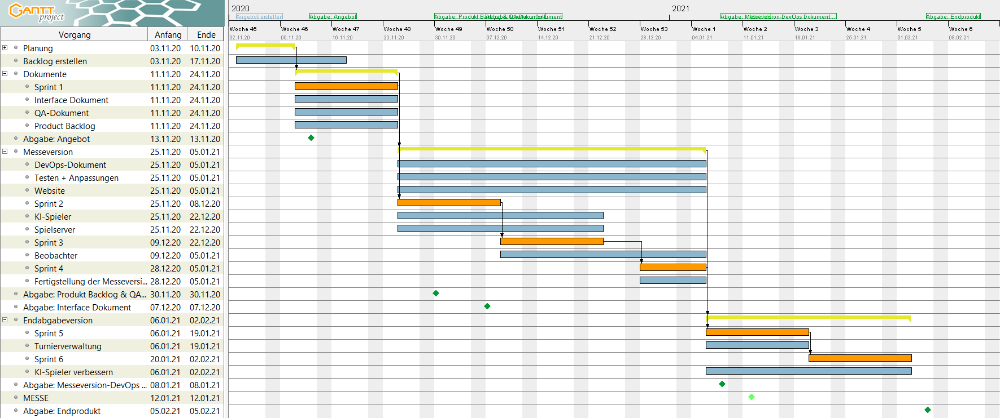

Das Projekt
Dieses Projekt ist Teil des "Softwaretechnikpraktikums", eine Veranstaltung der Uni Paderborn. Nach Anmeldung dieses Kurses konnten wir uns in eine von 15 Gruppen eintragen, mit welcher dann dieses Team gebildet wurde.
Unser Professor in diesem Kurs ist Prof. Dr. Axel Ngonga, die Organisation übernehmen Dr. Stefan Heindorf und Adrian Wilke.
Ziel dieses Praktikums sind das Erstellen des Amazonen-Spiels mit allen geforderten Komponenten und die Anwendung aus bereits vorherigen Lehrveranstaltungen.
Gestellt bekamen wir folgende Dienste:
Git,
auf welchem wir sämtliche Arbeitsdaten speichern konnten und sämtliche Abgaben speichern mussten;
Kanboard,
in welchem wir unsere Arbeitspläne aufschreiben, verwalten und abhaken konnten, je nachdem was noch getan werden
musste oder schon fertig war;
BigBlueButton,
wo unsere wöchentlichen Meetings abgehalten wurden.
Jeder Gruppe wurde ein Tutor zugewiesen, bei uns war es Lukas Blübaum, welcher als Ansprechpartner bei Fragen und Problemen galt und die Rolle als "zweiter Scrum Master" annahm.
Bei Fragen zum Produkt jedoch durfte er uns nicht helfen, da er nicht der Kunde war. Der Kunde war in diesem Fall das Orga-Team, bei Fragen bezüglich der Funktionen mussten wir uns an sie wenden.
Die offiziellen Meetings mit Lukas gingen mindestens eine Stunde und wir hatten unser Meeting Dienstags um 16 Uhr. Da in unserer Gruppe ein Sprint 2 Wochen lang war, haben wir dort jede zweite Woche ein Sprint Review gemacht und uns auf den nächsten Sprint vorbereitet.
Außerhalb des offiziellen Meetings haben wir Donnerstags um 15 Uhr ein Meeting angesetzt, um nochmal die Aufgaben für das Wochenende zu verteilen.
In dem Projekt selber mussten wir nicht nur das Spiel mit der KI und dem Beobachter entwickeln, sondern mussten auch sämtliche Dokumente, welche in solch einem Prozess üblich sind, schreiben.
Dazu gehören das Angebot, der Product-Backlog, das QA-Dokument, das Interface-Dokument, das DevOps-Dokument und natürlich die Endabgabe. All diese Dokumente sind unter dem Reiter "Impressum & Downloads" zu finden.
Abgesehen von den Dokumenten waren die Vorgaben, an welche wir uns zu halten hatten, waren, das wir eine Client-Server-Architektur erstellen und unsere Arbeitsweise nach dem SCRUM Prinzip gestalten sollten.
Dabei haben wir nach diesem Prinzip jeder Person eine Rolle zugeteilt, mit Mirja Kühn als Scrum Masterin. Zu Beginn erstellten wir als erstes den folgenenden Sprint Plan, mit einem Intervall von 2 Wochen pro Sprint:

In diesem Projektplan sieht man sämtliche Sprints mit zugehörigen Aufgaben und Markierungen für wichtige Termine; das Einhalten der Aufgaben innerhalb der Sprints wurde in den meisten Fällen geschafft.
Die wichtigen Termine in dem Plan sind zum einen sämtliche Fristen für die Abgaben, in dem Bild mit einem dunkelgrünen Diamanten gekennzeichnet, und die Messe, auf welcher wir unsere KI und unser Konzept darstellen mussten, in hellgrün.
Die Messe lief, unter aktuellen Umständen vollkommen online auf BigBlueButton ab, beginnend um 8:30. Zuerst hat jede Gruppe sich und seine KI vorgestellt, danach war kurz Zeit für Fragen.
Nach Mittag wurden dann Breakout Rooms für jede Gruppe bereitgestellt, in welchem sich mindestens einer der Gruppe aufhalten musste um sich um Fragen der anderen zu kümmern.
Die anderen der Gruppe sollten in die anderen Breakout Rooms gehen, um Informationen zu sammeln damit jede Gruppe am Ende eine andere KI einkauft, um mit der eingekauften KI die eigene zu verbessern.
Dabei gab es den Ansporn, wer am meisten seine KI "verkauft" hat, bekam einen Bonuspunkt auf die bestandene Klausur. Es war dann bis 18:00 Zeit, dem Orga-Team und der entsprechenden Gruppe mitzuteilen, welche KI man kauft.